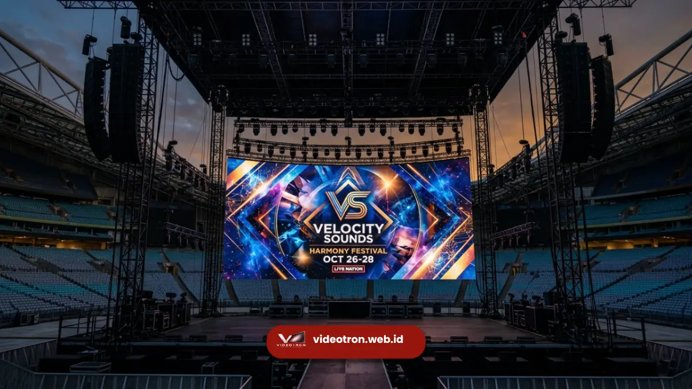

Layanan sewa videotron untuk konser memberikan visual panggung megah, beresolusi tinggi, dan tahan cuaca untuk menciptakan pengalaman penonton yang imersif dan berkesan.
Infrastruktur layar digital ini dirancang secara khusus untuk memproyeksikan gambar tajam ke seluruh penjuru area pertunjukan musik berskala besar.
Penggunaan perangkat visual profesional tersebut memastikan seluruh penonton mendapatkan visibilitas panggung yang optimal tanpa terkendala jarak pandang fisik.
- Kualitas visual tajam meningkatkan keterlibatan penonton secara signifikan.
- Konfigurasi layar digital dapat disesuaikan dengan dimensi panggung pertunjukan.
- Peralatan profesional menjamin keandalan operasional tanpa gangguan teknis.
- Integrasi multimedia memaksimalkan penyampaian pesan dan estetika acara.
Setiap pertunjukan musik modern menuntut standar produksi yang sangat tinggi untuk memuaskan ekspektasi penonton yang membayar tiket premium.
Integrasi elemen pencahayaan, tata suara, dan proyeksi gambar digital harus berjalan dalam harmoni yang sempurna. Layar digital format besar bertindak sebagai medium komunikasi visual utama yang menyatukan performa artis dengan atmosfer panggung secara menyeluruh.
- 1. Mengapa Videotron Sangat Krusial bagi Penonton?
- 2. Bagaimana Standar Teknis Videotron Skala Besar Bekerja?
- 3. Apa Saja Kategori Layar Berdasarkan Lokasi Acara?
- 4. Berapa Kebutuhan Daya Listrik untuk Sistem Visual?
- 5. Bagaimana Proses Instalasi Dilakukan dengan Aman?
- 6. Mengapa Harus Memilih Layanan dari Kami?
Mengapa Videotron untuk Konser Sangat Krusial bagi Penonton?
Videotron untuk konser sangat krusial karena perangkat ini menduplikasi aksi panggung secara langsung sehingga penonton di area terjauh tetap merasakan kedekatan emosional. Kehadiran layar raksasa menghapus batasan jarak fisik antara musisi yang tampil dan ribuan audiens di area festival.
Penonton yang berada di barisan paling belakang tidak akan kehilangan momen penting berkat detail visual yang dipancarkan dengan sangat jernih.
Selain memperbesar aksi panggung, panel digital ini berfungsi sebagai kanvas artistik untuk menampilkan animasi grafis yang selaras dengan irama musik.
Efek visual dinamis yang dirancang khusus untuk setiap lagu menciptakan atmosfer imersif yang membangkitkan euforia massa.
Promotor juga memanfaatkan ruang layar untuk menampilkan logo sponsor atau informasi darurat secara efektif kepada puluhan ribu orang secara serentak.
Keseluruhan fungsi tersebut menjadikan layar digital sebagai pusat perhatian visual yang tidak tergantikan dalam produksi acara.
Bagaimana Standar Teknis Videotron Konser Skala Besar Bekerja?
Standar teknis videotron konser berskala besar bekerja berdasarkan kerapatan piksel layar, tingkat kecerahan maksimal, dan stabilitas penyegaran gambar untuk menghasilkan proyeksi visual tanpa cacat.
Kerapatan piksel, yang sering disebut sebagai pixel pitch, menentukan seberapa mulus gambar terlihat dari jarak dekat maupun jauh.
Untuk area dalam ruangan, ukuran piksel yang sangat rapat dibutuhkan agar gambar tidak terlihat pecah di mata penonton barisan depan.
Sementara itu, tingkat kecerahan diukur dalam satuan nits dan menjadi faktor absolut untuk melawan pendaran lampu sorot panggung yang sangat kuat.
Panel digital kelas profesional dilengkapi dengan komponen dioda berkualitas tinggi yang mampu memancarkan warna murni tanpa distorsi.
Kemampuan mengkalibrasi warna secara presisi memastikan bahwa rona kulit artis yang tertangkap kamera siaran langsung terlihat natural saat ditampilkan di layar utama panggung.

Apa Saja Kategori Layar Visual Berdasarkan Lokasi Acara?
Kategori layar visual konser dibagi menjadi dua varian utama yaitu modul dalam ruangan untuk resolusi rapat dan modul luar ruangan untuk ketahanan cuaca ekstrem.
Modul dalam ruangan fokus pada kualitas kontras warna yang mendalam dan tingkat kebisingan kipas pendingin yang sangat rendah agar tidak mengganggu sistem tata suara akustik.
Resolusi ekstrem memungkinkan penayangan konten sinematik dengan tingkat detail yang menyerupai layar bioskop premium.
Di sisi lain, panel luar ruangan dibangun dengan material pelindung khusus yang memiliki sertifikasi anti air dan debu. Struktur kabinet layar dirancang secara mekanis untuk menahan terpaan angin kencang di area stadion terbuka.
Perbedaan spesifikasi struktural ini menuntut promotor untuk memahami secara tepat lingkungan lokasi acara sebelum memutuskan jenis panel mana yang paling aman dan efisien untuk digunakan.
Berapa Kebutuhan Daya Listrik untuk Sistem Visual Panggung?
Kebutuhan daya listrik sistem visual panggung membutuhkan pasokan arus tiga fasa berkapasitas tinggi yang terpisah dari jalur audio untuk mencegah gangguan lonjakan tegangan tiba-tiba.
Satu meter persegi panel digital dapat mengonsumsi daya maksimum antara lima ratus hingga delapan ratus watt saat menampilkan gambar berwarna putih terang seluruhnya.
Penyelenggara wajib menyediakan generator cadangan dengan sistem perpindahan otomatis untuk memastikan layar tidak padam saat terjadi pemutusan arus.
Manajemen distribusi daya listrik yang profesional menggunakan panel kontrol distribusi yang dilengkapi pemutus arus otomatis di setiap segmen blok layar.
Pendekatan kelistrikan terdistribusi ini menjamin bahwa jika terjadi kegagalan komponen pada satu modul, keseluruhan kanvas digital tidak akan mengalami mati total.
Tim teknisi kelistrikan terus memantau beban voltase dan suhu kabel secara waktu nyata selama konser berlangsung dari ruang kontrol pusat.
Bagaimana Proses Instalasi Visual Dilakukan dengan Aman?
Proses instalasi visual dilakukan melalui teknik rigging profesional menggunakan rangka besi baja terstandarisasi untuk menahan beban layar raksasa di atas panggung secara aman mutlak.
Pekerjaan ini dimulai dengan kalkulasi beban struktural oleh insinyur sipil untuk memastikan atap panggung sanggup menahan tonase ribuan kabinet digital yang digabungkan.
Setiap kabinet saling mengunci melalui mekanisme pengait presisi tinggi yang menjamin permukaan layar rata tanpa celah bayangan.
Kru teknis lapangan menggunakan kerekan motor elektrik yang tersinkronisasi untuk mengangkat susunan modul panel dari lantai menuju posisi ketinggian yang telah ditentukan dalam cetak biru desain.
Sabuk pengaman baja sekunder dipasang di setiap baris layar sebagai langkah mitigasi risiko fisik. Protokol keselamatan kerja ketat diterapkan selama proses bongkar muat untuk mencegah insiden yang dapat merugikan properti material maupun nyawa manusia di area produksi.
Mengapa Harus Memilih Layanan dari vendorvideotron.web.id Sekarang?
Memilih layanan penyedia perangkat visual dari vendorvideotron.web.id memberikan jaminan kualitas teknis kelas dunia, dukungan instalasi tepat waktu, dan harga komersial yang sangat kompetitif.
Keberhasilan konser Anda bergantung sepenuhnya pada keandalan vendor penyedia teknologi panggung yang tidak akan berkompromi pada spesifikasi teknis. Kami memahami bahwa tidak ada ruang untuk kesalahan teknis saat ribuan penonton telah menantikan pertunjukan yang spektakuler.
Infrastruktur inventaris kami mencakup panel digital teknologi terbaru yang siap dikonfigurasi untuk segala ukuran dan tingkat kerumitan desain panggung.
Segera konsultasikan kebutuhan produksi visual Anda kepada tim ahli kami, dan dapatkan proposal penawaran komersial yang dirancang khusus untuk menyukseskan agenda promosi Anda.
Silakan kunjungi portal resmi kami di vendorvideotron.web.id untuk melakukan reservasi unit dan jadwalkan sesi diskusi teknis menyeluruh bersama direktur operasional lapangan kami.

Hawa Nadira
LED Technology Consultant dan Visual Educator
Konsultan dan spesialis solusi display digital berdedikasi tinggi yang fokus membagikan panduan edukatif mengenai penerapan teknologi layar LED videotron untuk kebutuhan interior modern di Indonesia.